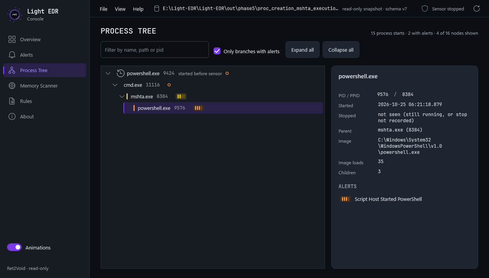
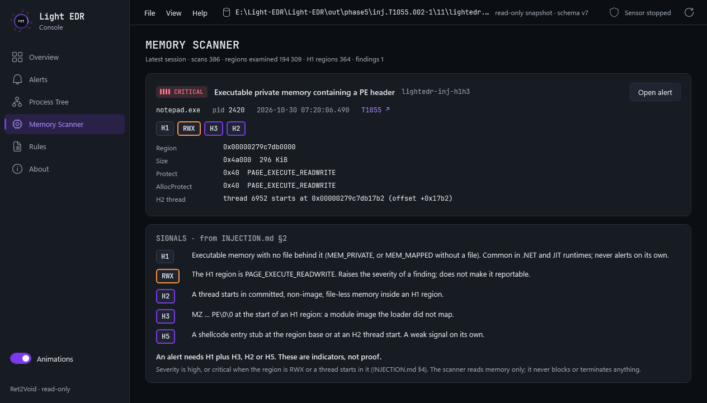

The shape of the system
One event, three threads
Everything in this project follows from one constraint. The ETW callback runs on the thread that
called ProcessTrace. Anything slow inside it stalls event delivery, and when the
kernel's trace buffers fill, the kernel discards events. A slow disk write would blind
the sensor at exactly the moment the machine is busiest — which is also the moment an attacker
is most likely to be working.
So the callback parses, filters, hands the event over, and returns. Everything expensive happens on the other side of a bounded queue.
The event path above is still exactly this. Phase 4 adds a fourth thread, the memory scanner, beside the writer rather than in this line: the writer sends it a request for each new process and receives findings back through two more bounded queues. See Phase 4.
Phase 1 · Complete
Telemetry: getting events out of the kernel
Event Tracing for Windows has four roles, and the first thing to understand is that Light EDR plays two of them while Microsoft supplies the third.
A trace session is a kernel object with a name and a set of buffers. The controller creates it
with StartTraceW and attaches providers to it with EnableTraceEx2.
The consumer opens the same session by name with OpenTraceW and then calls
ProcessTrace, which blocks and invokes a callback per event until the session stops.
Decoding an event: the TDH two-call pattern
An ETW event arrives as a binary blob. The meaning of its fields lives in the provider's manifest, and Trace Data Helper is the API that reads that manifest for you. Every TDH lookup is two calls — ask for the size, then ask for the value:
// 1. how many bytes does this property need? TdhGetPropertySize(record, 0, NULL, 1, &descriptor, &requiredSize); // 2. now copy it into my buffer TdhGetProperty(record, 0, NULL, 1, &descriptor, requiredSize, buffer);
The pattern is everywhere in Win32: the API cannot know how large your buffer is, so you ask
first. EventParser_DumpProperties exists for the same reason in reverse — property
names come from a manifest that can differ between Windows builds, so rather than guessing a
field name and silently getting nothing back, you enumerate what this machine actually
exposes.
An early version copied the session name into the EVENT_TRACE_PROPERTIES buffer
before calling StartTraceW. Microsoft's documentation is explicit that the API
performs that copy itself, at the offset you set in LoggerNameOffset. Doing it
manually is redundant work that gets overwritten — harmless here, but the kind of plausible
wrong assumption that is impossible to catch by reading your own code. Every API claim in this
project is now checked against Microsoft's documentation before it is written down.
The C / C++ boundary
Phase 1 ends at a deliberate seam. Below it, src/telemetry/ is C17; above it,
everything is C++17. The boundary is the conversion from ParsedEvent to
NormalizedEvent.
| ParsedEvent — C17 | NormalizedEvent — C++17 |
|---|---|
| wchar_t imageName[512] | std::wstring imageName |
| BOOL hasParentProcessId | bool hasParentProcessId |
| Fixed size, no allocation | Owns its memory, grows as needed |
| Cheap and rigid | Self-managing and flexible |
The split is not stylistic. ETW and TDH are C APIs, the callback sits on a latency-sensitive path where allocation is best avoided, and a flat POD crossing the boundary means neither side has to understand the other's memory model — the C parser never allocates anything the C++ side has to free. Above the boundary, RAII does real work: the database handle, the prepared statements, the writer thread and the queue are all owned by destructors.
Phase 2 · Complete
Storage: writing to disk without going blind
"Put the events in SQLite" sounds simple. Disk writes are slow and the callback cannot be slow. All of Phase 2 is the resolution of that contradiction.
Why the queue drops instead of blocking
The textbook producer/consumer queue applies backpressure: when the buffer is full the producer blocks until the consumer catches up. That option does not exist here.
TryPush therefore never
blocks: when the queue is full it drops the newest event and increments a counter that is
written to session_stats at shutdown. An unbounded queue would not fix this either —
it only relocates the failure into memory growth until the process is killed.
Dropping the oldest is defensible too, but the history already captured is what reconstructs the chain leading up to an alert. Keeping it intact is worth more than the newest record.
Fill the queue until it drops
The ETW callback can never wait, so a full queue drops the newest event and counts it. Raise the kernel rate above the writer speed, or fire a burst, and watch the accounting stay exact.
The filter that could have blinded the sensor
Phase 1 measurement showed a single application launch producing roughly fifteen
ImageLoad records, nearly all of them ordinary system DLLs. Persisting all of them
fills the database with data no rule will ever match on, so
EventFilter suppresses module loads from
\Windows\System32\, \SysWOW64\ and \WinSxS\.
The obvious next step — "ignore anything under System32" — would have been a serious mistake.
System32 is exactly where the living-off-the-land binaries live:
powershell.exe, rundll32.exe, mshta.exe,
regsvr32.exe. Filtering process creation by path would blind the sensor to the most
common execution technique in the ATT&CK matrix.
Filtering applies to ImageLoad only. Process lifecycle is never filtered.
The residual cost is stated rather than hidden: suppressing system-directory module loads gives up detection of DLL side-loading of a legitimately-named module from a system directory. The filter can be disabled at runtime.
Phase 3 found a second cost, one this note did not foresee: the filter was also hiding the handful of System32 modules that detection rules need. Week 4 fixed it with a keep-list; see the rule pack.
SQLite: WAL, and why a reader never blocks the sensor
lightedr.db would
block the sensor's writes — an analyst looking at the data would stop the data being collected.
| PRAGMA | Why |
|---|---|
| journal_mode = WAL | A reader can run concurrently with the writer. |
| synchronous = NORMAL | A deliberate trade: in WAL mode the sensor can lose the last few transactions on power loss, but never corrupt the database. Acceptable for telemetry; it would not be for audit-of-record data. |
| foreign_keys = ON | Off by default. Without it the ON DELETE CASCADE on alerts does nothing, and the retention purge leaves alerts pointing at events that no longer exist. |
| busy_timeout = 5000 | Retry for five seconds rather than failing instantly if another connection holds the write lock. |
Batching: the one performance decision that matters
BEGIN IMMEDIATE rather than the default deferred transaction: a deferred transaction
takes the write lock lazily on the first write, which can produce SQLITE_BUSY
part-way through a batch — a far more annoying failure than being refused up front.
String binds use SQLITE_TRANSIENT, not SQLITE_STATIC. The converted
UTF-8 string is destroyed at the end of the loop iteration, long before the statement is
stepped. SQLITE_STATIC here is a dangling-pointer bug that appears to work in
testing and corrupts data under load.
Measured accounting, not assumed correctness
Our own queue drops events when the writer falls behind, and we count those. The kernel can also
discard events before they ever reach us, when session buffers fill faster than
ProcessTrace drains them — and those losses are completely invisible from inside the
callback. The events simply never arrive.
ControlTraceW with EVENT_TRACE_CONTROL_QUERY returns the session's
EventsLost and RealTimeBuffersLost counters. It has to be called
while the session is still running — once the session stops the numbers are gone — so
the supervision loop samples every ten seconds and keeps the last value for the shutdown report.
Every run writes a session_stats row in which this identity holds:
events_seen = events_suppressed + events_stored + events_dropped
Reporting only our own drop counter while ignoring the kernel's would produce a misleadingly clean picture. A sensor that reports "I dropped 412 events" is more useful than one that pretends it saw everything.
Shutdown order is load-bearing
1. StopSessionOnce() // no new events are produced 2. consumerThread.join() // ProcessTrace has returned, callback is done 3. writer.Stop() // drains everything already queued 4. RecordSessionStats() // stats, then close the database
Reversing steps 2 and 3 discards whatever was still in the queue. Stopping the session is also
the thing that makes the blocked ProcessTrace call return, which is what lets the
consumer thread finish at all.
Phase 3 · Complete · v0.3.0
Detection: from event to alert
Sigma is a rule format, not an engine. Most tooling around it converts rules into a query for a SIEM that already holds the logs. Light EDR uses the same rule language at the other end of the pipeline — on the endpoint, at event time.
CommandLine decision further down.
Where rules run, and why not against the database
The open question at the end of Phase 2 was whether to evaluate rules against live events in-process, or to poll the database on a timer. The decision is in-process, on the writer thread, immediately before the batch is inserted:
- The callback thread is off-limits — the entire three-thread design exists to keep slow work out of it.
- Polling adds latency for no benefit and re-reads rows that were just written. By the time a poll fires, a short-lived process is already gone.
- The writer thread already holds the batch in memory and is already the only thread touching the database, so alert persistence needs no new locking.
The foreign key that does not exist yet
alerts.event_id references events.id — a row id that does not exist
until the event has been inserted. The rule engine therefore reports a match by its
index within the batch, and the storage layer translates that index into a row id.
NT device paths, and a bug worth drawing
The kernel reports paths in NT device form:
\Device\HarddiskVolume3\Windows\System32\cmd.exe. Any rule that reasons about
location — "an executable under the user's Temp directory" — needs the translated form,
because the volume number is machine-specific while the drive letter is not.
QueryDosDeviceW maps in the opposite direction to the one we need: give it
"C:" and it returns \Device\HarddiskVolume3. So the resolver enumerates
drive letters with GetLogicalDriveStringsW and builds the reverse map.
\Device\HarddiskVolume1 is a string
prefix of \Device\HarddiskVolume10, so a naive prefix match silently misattributes
every event on that volume — and D:0\tools\x.exe does not look obviously wrong at a
glance. A match is now only accepted when the character after the device name is a backslash.
Sorting the table longest-device-first is a second line of defence.
PathResolver::Translate makes no Windows calls; only Refresh
does. That separation is what lets the string logic — the part with every edge case in it — be
unit-tested without a live machine, against a volume layout chosen to include the cases a real
machine rarely has. When translation fails it returns an empty string and the caller keeps the
raw NT path; guessing a drive letter would be worse than saying nothing.
Parent image, and the order that matters
The Kernel-Process provider supplies ParentProcessID but not the parent's image.
Without a process table a rule can say "the parent PID was 4812", which is useless — but not
"the parent was WINWORD.EXE", which is most of the detection value available from
process telemetry. The table is seeded at startup from
CreateToolhelp32Snapshot, because ETW cannot tell us about processes that started
before the trace session did.
ProcessTable::OnEvent
stores BestImagePath(), so if the order slips, the table fills with raw NT paths
and parent_image stops agreeing with image_path. Enrich-before-update
is a weaker requirement — it keeps the semantics "the tree as it was when the process was
created" — but the translate-first dependency is a real correctness constraint.
The table is keyed by PID and Windows recycles PIDs aggressively. The guard is an ordering
check: any entry whose start time is later than the child event is rejected, because a
parent cannot start after its child. That closes the common direction. It does not close the
case where the reusing process started earlier still — which needs a process start key that only
a kernel callback or a newer ETW property provides. When the parent is unknown the lookup
returns empty and a rule requiring ParentImage simply does not match, which is the
correct behaviour when we do not know.
The seam between storage and detection
If WriterThread included the detection pipeline's header, storage would depend on
detection; if the pipeline drove the writer, the reverse. Either way the two layers become
impossible to build or test apart.
Instead there is an interface, IEventProcessor, in src/core/. The
writer holds a pointer to it and knows nothing about rules; DetectionPipeline
implements it and knows nothing about SQLite. Alert lives in core/
because both need it. The cost is one virtual call per batch — not per event.
A useful side effect: a null pointer is a valid configuration, and it reproduces Phase 2 behaviour exactly. That makes it the measurement baseline for what the detection stage costs.
Week 1: plumbing before the parser
Week 1 shipped three hard-coded C++ predicates instead of YAML rules. That was deliberate: building the loader first would have meant two weeks before finding out whether an alert could reach the database at all. With the plumbing proven, week 3 deleted the predicates and rewrote the same three detections as rule files.
| Week-1 predicate | What it proved | Now lives in |
|---|---|---|
| W1-0001 · cmd.exe started | Alerts reach the database | Removed in week 4: a smoke test that fired on every cmd.exe |
| W1-0002 · user-writable dir | Path translation happened | proc_creation_user_writable_location.yml |
| W1-0003 · Office → shell | Parent enrichment works | proc_creation_office_spawns_script_host.yml |
RuleEngine_MatchesEachShippedRule fed each rewritten rule the event its predicate
used to catch, so the move from code to data was tested rather than assumed. Since week 4 the
same idea covers the whole pack: every file in rules/ has an event that must fire
it and a near miss that must not.
Week 2: a YAML reader that refuses
Rule files are YAML, and the reader is written in-house in yaml_reader.cpp. It
accepts a documented subset and rejects everything else with the file, the line and the
construct. The pre-agreed check at the end of the week did not trigger the fallback: yaml-cpp
was not vendored, and third_party/ still holds only SQLite.
| Accepted | Rejected, with file and line |
|---|---|
| Block mappings | Flow style: {a: b} [a, b] |
| Block sequences, indented or at the key's own column (the style most published Sigma rules use) | Anchors &name and aliases *name |
| Plain scalars | A second document, or any ... |
| Single-quoted scalars, '' as an escaped quote | Block scalars | and > |
| Double-quoted scalars: \\ \" \/ \n \r \t \0 | Tabs in indentation |
| # comments | Multi-line plain scalars |
| One leading ---, because real Sigma files begin with it | Duplicate keys · inconsistent indentation · unterminated quotes |
rules/foo.yml:14: tabs are not allowed for indentation
Tabs are refused rather than guessed at, because how wide a tab is depends on the editor that saved the file. The same reasoning covers every row on the right: a rule file that quietly half-parses looks like detection coverage and provides none.
A colon separates a key from its value only when a space or the end of the line follows it.
That is why description: see https://attack.mitre.org/… survives: the colon in
:// is followed by a slash. Likewise # starts a comment only at the
start of a line or after whitespace, so a#b stays one value. Getting either wrong
would cut a rule value short with no error at all.
YamlReader::Parse takes text and makes no operating-system call. Reading the file
and decoding UTF-8 belong to the rule loader. That split is what lets all 28 reader tests run
without a file system, and 15 of them are malformed input that must be refused.
Week 3: from text to a rule
The reader checks syntax. RuleBuilder in rule_loader.cpp checks
meaning: every field, modifier, logsource and condition is compared against what the engine can
actually evaluate, and ConditionParser resolves selection names to indices. What
comes out is a Rule that needs no further checking at event time.
LoadDirectory skips a rejected file and loads the rest, because a sensor that
refuses to start over one typo protects nothing.
The detection vocabulary
These five fields are everything a rule may test. Their meaning follows Sigma's per-category conventions, which differ in one place that matters.
| Field | process_creation | image_load |
|---|---|---|
| Image | The new process | The process loading the DLL |
| ImageLoaded | rejected | The DLL being loaded |
| ParentImage | The parent process | rejected |
| ProcessId | The new process | The loading process |
| ParentProcessId | The parent process | rejected |
An ImageLoad event's own path is the module, so in the image_load category Image
has to come from somewhere else. The detection stage gained a step for it: the loading process
is looked up in the process table by PID, with the same start-time guard used for
ParentImage. An entry that started after the event describes a different process.
The loader also tells a typo apart from a real limitation:
rules/x.yml:12: field 'CommandLine' is not collected by this sensor: the Kernel-Process ETW provider does not report it (see PHASE3_PLAN.md, decision D3) rules/x.yml:12: unknown field 'Imgae' (supported: Image, ImageLoaded, ParentImage, ProcessId, ParentProcessId)
Twenty-three other Sigma fields the sensor recognises but cannot supply, such as
User, Hashes, IntegrityLevel and
OriginalFileName, get the "not collected" message rather than "unknown".
Byte-order marks are stripped. Notepad writes one, and left in place the first
key reads as \uFEFFtitle, which produces a baffling "missing required field
'title'". A repeated rule id is rejected, naming both files.
Files load in filename order, so when several rules match one event the alerts
appear in the same order on every run.
The rules directory is the one beside the executable when it exists, otherwise the source
tree's rules/, whose path is baked in at build time. An edited rule takes effect on
the next run without a rebuild, and the chosen directory is logged at startup.
Wildcards become four comparisons
Sigma writes wildcards into the value itself. The loader turns each value, once, into one of
four plain comparisons, so the hot path never runs a glob matcher. Anything a leading or
trailing * cannot express is rejected rather than approximated.
| Value in the rule | Loaded as |
|---|---|
| '*\cmd.exe' | EndsWith \cmd.exe |
| 'C:\Tools\*' | StartsWith c:\tools\ |
| '*\Temp\*' | Contains \temp\ |
| 'C:\x.exe' | Equals c:\x.exe |
| Image|endswith: '\cmd.exe' | EndsWith, from the explicit modifier |
| '*' | rejected: matches every value; remove the field instead |
| 'C:\*\x.exe' | rejected: a * in the middle; use |contains or split the value |
| 'cmd?.exe' | rejected: ? is not supported |
| Image|endswith: '*\cmd.exe' | rejected: wildcard combined with an explicit modifier |
Supported modifiers are contains, startswith, endswith
and all. Real Sigma modifiers the engine does not implement, including
re, base64, windash, cidr and the numeric
comparisons, are refused by name. ProcessId and ParentProcessId take
digits only and no string modifier. A * or ? cannot occur in a
Windows file name, so a path never needs one escaped.
ProcessStop reports a bare file name, and C:\Tools\notcmd.exe also ends in
cmd.exe. The leading separator anchors the match to a whole file name, and a test
pins both cases. A field the sensor could not resolve, such as an unknown parent, is empty and
never matches anything: a rule that fires when it does not know the parent is not the rule that
was written.
The condition grammar
condition := or_expr
or_expr := and_expr ( "or" and_expr )*
and_expr := not_expr ( "and" not_expr )*
not_expr := "not" not_expr | primary
primary := NAME | "(" or_expr ")" | quantifier
quantifier := ( "1" | "all" ) "of" ( NAME | NAME* | "them" )
Precedence, tightest first, is not, and, or: the same
as Sigma and every mainstream language, so a or b and c means
a or (b and c). Parentheses override it. Selection names, including the prefix in
1 of filter_*, are resolved to indices while the rule loads, so the engine never
looks up a name at event time.
char, not bool: std::vector<bool> is a packed
specialisation with proxy references, slower to index and a known source of surprises. The
selection names here are illustrative; the shape is the common "selection and not filter" idiom.
If filter_* matched no selection, which is almost always a typo,
1 of filter_* would be permanently false and all of filter_*
vacuously true. A rule using the second would alert on every event it sees. The parser
therefore rejects a quantifier that matches nothing, along with a condition that names an
undefined selection.
Also refused at load: quantifiers other than 1 and all, a wildcard
name outside a quantifier, aggregation pipes such as | count() by host > 5, and
timeframe. Aggregation is a different kind of detector, one that keeps state over a
time window; this engine evaluates one event at a time.
Run eight real rules against an event
These are eight rules from the pack, with their real selections and filters, matched case-insensitively as the engine does. Build a ProcessStart event and see which selections become true.
Week 4: a rule pack, and the filter that was hiding it
The three week-3 rules became eighteen. Each one is expressible with the five fields the
sensor actually has, carries an ATT&CK tag, a falsepositives section and a
reference, and has a test event that must fire it plus a near miss that must not. Fourteen
match on process creation and four on module loads.
| Tactic | Rules | Techniques |
|---|---|---|
| Initial access | Office spawns a shell or script host | T1566.001 |
| Execution | Executable from Temp · from Public or ProgramData · from Downloads · script host → PowerShell · Office loads a scripting engine · script host → wmic · WmiPrvSE → shell · PsExec service | T1204.002 · T1059.001 · T1059.005 · T1047 · T1569.002 |
| Persistence | Script host or Office → schtasks · web server → shell | T1053.005 · T1505.003 |
| Defense evasion | System binary name outside System32 · mshta · regsvr32 loads scrobj.dll · rundll32 from a script host or a user-writable parent · script host loads the .NET runtime | T1036.005 · T1218.005 · T1218.010 · T1218.011 · T1620 |
| Credential access | rundll32 loads comsvcs.dll, or a script host loads dbghelp / dbgcore | T1003.001 |
| Command and control | certutil or bitsadmin started | T1105 · T1197 |
The plan listed "amsi.dll loaded by an unexpected process" and
"dbghelp.dll loaded by a non-debugger". Neither survives contact with a real
machine: AMSI is loaded by nearly every PowerShell and .NET 4.8 process, and crash reporters in
ordinary applications load dbghelp. They became "a script host loads the .NET runtime", which is
the DotNetToJScript technique, and "rundll32 loads comsvcs.dll", which is the
MiniDump LOLBin. A rule is chosen for what it can defend, not for the count.
The keep-list: the filter decides what detection can see
EventFilter runs before the queue, so a module it drops never reaches a rule. It
drops everything under System32 — which is exactly where scrobj.dll,
comsvcs.dll and vbscript.dll live. Under the Phase 2 filter, the
Squiblydoo rule could load cleanly and never see a single event: the "loads but never matches"
outcome the loader was built to prevent, arriving one layer earlier.
Throttling: one alert per behaviour, not per repetition
A script that starts the same child a hundred times would otherwise produce a hundred identical
alerts and bury the first one. The throttle stores the first alert, suppresses repeats for 60
seconds and counts them in session_stats.alerts_throttled. The event itself is
always stored: throttling applies to alerts, never to telemetry.
(rule_id, pid), but every process start has a new pid, so that key could never
suppress anything. The target is in the key so that one parent starting two different
suspicious binaries still produces two alerts. A start with no known parent is never throttled:
with too little information to recognise a repeat, the alert goes through.
A five-step exercise on the development machine raised exactly the five expected alerts and
nothing else: mshta, an executable copied into %TEMP%,
certutil, regsvr32 /i:x scrobj.dll, and a VBScript starting
PowerShell. The regsvr32 alert is an image_load rule and fires only because of the keep-list.
The same run migrated the real development database from schema v2 to v3 in place.
Week 5: breaking it on purpose
A rule file must never be able to stop the sensor that loads it. Week 5 tested that claim two ways. The named cases from the plan — a truncated file, wrong indentation, an unknown field or modifier, a duplicate id, an empty directory — each produce a message and a running sensor. Then every shipped rule was broken mechanically: truncated at every byte, every line deleted, duplicated and re-indented. That is about 20,600 mutated rule files, and every one either loaded or was refused cleanly with a line number inside the file.
The sweeps found nothing. Four hand-built inputs did:
| Input | Size | Before week 5 | Now |
|---|---|---|---|
| a: - - - - … x | 100,000 markers on one line | stack overflow | refused: nesting deeper than 32 |
| A staircase of ever-deeper keys | a few hundred KB | stack overflow | refused: nesting deeper than 32 |
| ((((… sel …)))) | 100,000 pairs | stack overflow | refused: condition deeper than 64 |
| not not not … sel | 100,000 times | stack overflow | refused: condition deeper than 64 |
Both parsers are recursive descent, so every level of nesting is a stack frame. Rules load on
the main thread, whose stack on Windows is 1 MB. A few hundred kilobytes of nesting in one
stray file under rules/ was enough to crash the sensor at startup — the one failure
the loader was designed never to have. Real rules nest about six YAML levels and two or three
condition levels, so the limits cost nothing legitimate. Rule files over 256 KiB are now also
refused without being read; the largest shipped rule is under 2 KB.
What evaluation costs
- Rule values are lowercased once, when the rule loads. Event fields are lowercased once per event, not once per rule or per value. Matching is case-insensitive, as in Sigma.
- Rules are split into per-category buckets when they are installed. A ProcessStart visits 14 rules, an ImageLoad visits 4, and a ProcessStop returns immediately because no category covers it.
- The selection-results buffer is sized once for the widest rule, so evaluation never grows it.
- Every run records the per-event evaluation time as a mean and as p50 / p99 / max, from a log-linear histogram that is accurate to within 12.5% and never understates. Schema v4 stores them in
session_stats.
For the headline figure, lightedr_bench replays events recorded by the sensor through
the writer thread's real work — detection, then the SQLite commit — twice: once with the rule
pack and once with no rules. Same events, same order, same batch size, so the difference is the
engine. tools\run_bench.cmd reproduces it with one command.
| Per-event rule evaluation, 18 rules | Value |
|---|---|
| p50 | 1,279 ns |
| p99 | 5,631 ns |
| mean | 1,510 ns |
| max | 182,900 ns — one sample in 155,562, consistent with the thread being preempted |
They are noisy. Three runs put the writer overhead at +13.8%, +4.2% and +6.5%; treat it as single-digit percent, occasionally low teens, not a constant. The first two were 32-bit by accident. The prompt had the x86 compiler on its path, and nothing said so until the benchmark learned to print its own architecture; the figures above are the x64 run. The breakdown is a hypothesis. The likely main cost is copying and lowercasing each field once per event, which is several heap allocations; that has not been profiled. The headroom is at idle. Behaviour under heavy load is Phase 5's measurement, not this one.
One rule, in full
detection: selection: ParentImage|endswith: - '\WINWORD.EXE' - '\EXCEL.EXE' - '\OUTLOOK.EXE' # … three more Office applications Image|endswith: - '\cmd.exe' - '\powershell.exe' - '\mshta.exe' # … five more shells and script hosts condition: selection
Two fields under one selection are AND'd; a list of values is OR'd unless |all is
present. The alert records only the fields the rule actually tested, in
alerts.matched_fields, and the first attack.tNNNN tag becomes the
alert's technique. The full format — fields, modifiers, the grammar, the YAML subset and a
five-minute first rule — is in docs/Architecture/DETECTION.md in the repository.
Tests that do not need Administrator
173 tests and 1,175 checks across twelve files, all passing on MSVC, on a dependency-free harness of about ninety lines. No test framework was vendored: the project's dependency argument is that anyone can read every line of what it pulls in.
| File | Tests | Checks | Covers |
|---|---|---|---|
| test_yaml_reader.cpp | 28 | 121 | The YAML subset; 15 malformed inputs |
| test_rule_loader.cpp | 31 | 102 | Validation and every rejection path |
| test_condition.cpp | 18 | 42 | Grammar, precedence, quantifiers |
| test_rule_engine.cpp | 16 | 46 | Sigma semantics on fixture rules |
| test_rule_pack.cpp | 7 | 9 | Every shipped rule: a positive, a near miss, silence on benign activity |
| test_rule_hardening.cpp | 18 | 45 | Named malformed cases, ~20,600 mutated files, the depth limits |
| test_alert_throttle.cpp | 16 | 51 | The key, the window, the pipeline's accounting |
| test_event_filter.cpp | 8 | 35 | Keep-list, and its tie to the rule pack |
| test_db_manager.cpp | 10 | 244 | Schema v1 → v4 migrations compared column by column |
| test_latency_histogram.cpp | 7 | 447 | The 12.5% bound across forty bits of magnitude |
| test_path_resolver.cpp | 7 | 19 | NT → DOS translation |
| test_process_table.cpp | 7 | 14 | ParentImage and the PID-reuse guard |
| Total | 173 | 1,175 |
Check counts measure different things in different files. The rule-pack and hardening tests record a check only when a case goes wrong, so thousands of judged inputs appear as a handful of checks; the histogram test checks every sampled value. The suite needs no ETW session and no elevation — a test suite that needs an elevated prompt is a test suite that does not get run.
Each new area was checked by breaking the code on purpose and confirming the suite fails: removing a keep-list entry, keying the throttle on the child's pid, making a fresh and a migrated schema disagree on one default, dropping a rule's filter, reporting a histogram bucket's lower edge, and removing the YAML depth limit — the last of which crashes the test process, exactly as it should.
Phase 4 · complete · v0.4.0
Injection: looking inside other processes
Phase 3 sees processes start and modules load. It cannot see code that one process writes into
another, because the Kernel-Process provider does not report VirtualAllocEx,
WriteProcessMemory or a remote thread. A driver would catch those calls as they
happen. Light EDR has no driver, so it does the user-mode thing instead: it opens the target
afterwards, reads its memory map, and looks for memory that looks like code nobody loaded.
That is a different kind of detector from a rule. A rule judges one event in microseconds. A scan opens another process and walks its whole address space, which takes milliseconds or more. Most of this phase is about keeping that cost away from the parts of the sensor that cannot afford it, and about stopping a noisy signal from turning into noisy alerts.
All four weeks are done, ahead of the plan's mid-November dates: the scanner thread, four
signals, a measured false-positive and cost profile (schema v7), an opt-in command-line
experiment, and INJECTION.md. 250 tests and 1,717 checks pass on MSVC in Debug and
Release. The Atomic Red Team results are still provisional; making them final is Phase 5.
A fourth thread, and why it has to be one
The same rule that shaped Phase 2 applies again, one level up. On the ETW callback thread a scan would lose events. On the writer thread it would stall storage, and the queue in front of the writer would start dropping. So the scan gets its own thread, connected to the writer by two more bounded queues: requests go out, results come back. The writer stays the only thread that touches the database, and the scanner never sees SQLite or a rule.
ProcessStart the writer pushes a request and moves on. A full request queue drops
the request and counts it, so the writer never waits on the scanner. The writer drains finished
results with a non-blocking DrainNow before each event batch, so a finding reaches
the database within one flush interval at most.
The two new queues are the same class. Phase 4 turned the event queue's logic into a template,
BoundedQueue<T> in core/bounded_queue.h, with the same
drop-newest rule and the same pushed / dropped / peak counters. The original
EventQueue was left untouched rather than migrated, so the Phase 2 and 3 code
path did not change at all. The scanner thread runs in THREAD_MODE_BACKGROUND_BEGIN,
which Windows documents as lowering CPU, I/O and memory priority for background work. A scan is
never more urgent than the user's own programs.
When a process is scanned
Scanning a process the moment its ProcessStart arrives would be almost useless.
At that point the process has barely been created, and nothing has been injected into it yet,
because CreateRemoteThread, APC and hollowing all act after the target exists. So each request
becomes a short schedule of scans, plus a sweep that covers processes that were already running:
| Trigger | When | Why |
|---|---|---|
| ProcessStart | +0.5 s, +3 s, +10 s, +30 s | The first gives the loader time to map legitimate code; the later ones catch an injector that spawns its target and injects a moment later |
| Startup sweep | 5 s after start | Injection that happened before the sensor started |
| Periodic sweep | every 60 s, 4 scans per 100 ms | Injection into long-running processes such as explorer, long after their start event |
The sweep takes its own CreateToolhelp32Snapshot and never reads
ProcessTable, because the table belongs to the writer thread. A PID scanned in the
last 20 seconds is skipped by the sweep. The schedule is capped at 4,096 pending scans: past
that, the first scan of a new process still runs immediately and only the follow-ups are dropped
and counted. Because a process is now scanned several times, a region that has already produced
an alert is remembered by (pid, creation time, region base) and only reported again if
it gains a signal it did not have before.
Light_EDR --no-sweep turns the periodic sweep off and keeps the
ProcessStart rescans. It was added for the week 3 cost measurement, and it shows
what the sweep buys: without it, a process is never scanned again after its 30-second rescan,
and a process that was already running when the sensor started is never scanned at all.
What a scan reads, and what it refuses to touch
The scanner opens the target with PROCESS_QUERY_INFORMATION | PROCESS_VM_READ.
VirtualQueryEx documents the full query right as required, so the limited right is
not enough. The sensor enables SeDebugPrivilege at start so that processes of other
users can be opened. Protected (PPL) processes stay unreadable even then. They are counted, not
hidden.
The walk calls VirtualQueryEx region by region until it returns zero. It reads at
most a 64-byte head, 4 bytes at e_lfanew and a 16-byte probe. It never writes, never
changes a protection, and never reads a PAGE_GUARD or PAGE_NOACCESS page.
Reading a guard page would disarm it, so the scanner would change the target's behaviour.
Before trusting the handle, the scanner compares GetProcessTimes with the creation
time from the event. If the process it opened was created more than one second after that event,
the PID now belongs to a different process and the scan is abandoned. This is the same PID-reuse
problem the ProcessTable already guards against in Phase 3.
| Outcome | Counter | Meaning |
|---|---|---|
| Ok | scans_run | The address space was walked |
| AccessDenied | scans_skipped_access | ERROR_ACCESS_DENIED: protected process, System, CSRSS |
| Gone | scans_skipped_gone | ERROR_INVALID_PARAMETER: the process exited before the scan (an assumption, labelled as one) |
| PidReused | scans_skipped_reused | Opened, but created after its ProcessStart event |
| self | scans_skipped_self | PID 0, or the sensor itself |
| OpenFailed | scans_skipped_other | Any other OpenProcess error |
Every request handled ends in exactly one row of that table, so the counters add up to the
number of requests: the Phase 2 accounting rule, applied to scans. Week 1 had a single
catch-all for the last four outcomes. Week 2 split it (schema v6) after the first live run,
because one number could not tell a short-lived process from a bug. The mapping from error code
to outcome is a pure function, ClassifyOpenFailure, so it is unit-tested without
opening anything.
The signals
Each committed region is classified, and the expensive checks run only on the regions that pass
the cheap one. The decision logic lives in pure modules (region_classifier,
pe_probe, shellcode_probe, scan_conversion) that take plain
structs and bytes and are tested without Windows memory. The Win32 half,
process_scan and thread_inspector, only gathers the data.
| Signal | What it checks | Role |
|---|---|---|
| H1 | Committed MEM_PRIVATE region with an executable protection (the PAGE_GUARD bit masked off) | Candidate set. Never an alert alone |
| H1 mapped | MEM_MAPPED executable view with no file behind it (GetMappedFileNameW returns nothing): section-based injection | Candidate, same as H1 |
| RWX | The H1 region is PAGE_EXECUTE_READWRITE | Raises severity only |
| H3 | MZ at the region start, a bounds-checked e_lfanew at 0x3C, and PE\0\0 there | Corroborates: a whole PE image that the loader never mapped |
| H2 | A thread's start address (NtQueryInformationThread, ThreadQuerySetWin32StartAddress) falls inside an H1 region with no mapped file | Corroborates: code in that region is actually running |
| H5 | The first 16 bytes match a known shellcode entry stub: the x64 and x86 Metasploit block_api prologues, or the call $+5; pop reg GetPC idiom | Corroborates. Probed at the region start and at an H2 thread's start address. A fixed byte pattern, so easy to evade: weak on its own |
matched_fields. Severity is critical when the
region is RWX or a thread starts in it, otherwise high. The bottom box is drawn red
because it is the case the design deliberately refuses to alert on.
Scan a process the way the scanner does
Walk a memory map region by region. Image-backed, non-executable and guard pages are skipped; private executable memory is H1. An alert needs H1 and at least one of H3, H2 or H5.
Why bare H1 is never an alert
The plan required H1's false-positive rate to be measured on a clean machine before any
alert was built on it. A separate tool, tools/mem_census.cpp, walks every process
it can open and counts what the scanner would flag, without raising anything. On the development
workstation, about 240 processes in two runs, it found:
| Measure | Run 1 | Run 2 |
|---|---|---|
| Processes with H1 | 50 (21%) | 45 (19%) |
| …of which with RWX | 35 | 32 |
| H1 regions | 490 | 477 |
| Processes with H3 | 0 | 0 |
| Processes with H2 (week 2 run, 233 scanned) | 0 | |
About one process in five carries private executable memory on a clean machine. Three groups
produce almost all of it: .NET (CLR) hosts, almost all RWX; Chromium and Electron processes
(V8's JIT), mostly execute-read; and the Windows shell and compositor, execute-read only. An
alert on H1 would fire all day. RWX alone does not discriminate either, because
the CLR group is the RWX group. The plan originally allowed bare H1 at medium. The
baseline overruled it: bare H1 is now only counted, and used as the candidate set for the
other checks.
The zeros mean less than they appear to. H3 and H2 with no hits on a clean host is a false-positive baseline, not evidence that either detects anything. That needed a positive control, which is what the Atomic run below provided.
Week 3: the CLR hypothesis, tested
"The RWX group is the .NET group" was an observation from process names. Week 3 tested it by
mechanism. clr_attribution decides, for each live process, whether the .NET runtime
(clr.dll or coreclr.dll) is loaded, in two independent ways: from the
sensor's own ImageLoad rows, and from the live module list (EnumProcessModulesEx),
which is the ground truth. mscoree.dll is deliberately not counted: it is the shim
that decides whether to load a runtime, and processes that never run managed code load it too.
Over the 147 processes alive at the end of a 30-minute run on the VM:
| CLR loaded | Processes | With H1 | H1 regions | RWX regions |
|---|---|---|---|---|
| yes | 6 | 6 | 78 | 78 |
| no | 141 | 14 | 68 | 2 |
Every RWX region but two belonged to a process with the .NET runtime loaded.
The .NET JIT maps its code read-write-execute, so RWX in a healthy process is a managed-runtime
property. The non-CLR H1 was mostly execute-read memory in Chromium and Edge WebView hosts
(msedgewebview2, SearchApp, M365Copilot,
msedge), which is JavaScript JIT, plus the Windows shell. The telemetry answer agreed
with the module list in all 9 processes where it had one; the other 138 had started before the
sensor, and there a missing load row is correctly read as "unknown", not "no".
That turns the one-in-five H1 rate from an observation into an explanation, and it is the
measured justification for IsReportable. The plan had allowed for an allowlist of
JIT hosts in week 3. It was not needed: with a corroborating signal required, the 30-minute runs
below produced zero findings without one.
An earlier version attached a thread to an H1 region by comparing base addresses.
VirtualQueryEx reports BaseAddress as the queried address
rounded down to a page, not as the start of the region. So for any thread that starts past the
first page of its region, the two bases differ and the match failed silently. The fix matches on
containment: the start address must lie inside the region. The H2 classifier's
bounds check is written so that it cannot overflow near the top of the address space.
A finding becomes a row
In the schema, alerts.event_id is NOT NULL and points at an
events row. A memory finding has no ETW event behind it. Rather than loosen the
schema, the scanner synthesises one: a MemoryScan event (event_type = 4)
for the scanned process. It goes through the same CommitBatch as a rule match, with
the alerts at batchIndex 0, so the alert and its event share a transaction exactly
as in Phase 3.
The synthetic event records only what is known. image_path is the target's image.
image_path_nt, the parent PID and the session are NULL rather than an
invented 0, because none of them were observed. A clean scan writes no rows at all; it is only
counted. The alert carries everything needed to review it after the process is gone:
-- alerts.rule_id lightedr-inj-h1h3 -- alerts.technique T1055 matched_fields: Region=0x000001f2a3b40000; Size=0x2000; Protect=0x40; AllocProtect=0x04; Signals=H1+RWX+H3+H2; H2ThreadId=4412; H2Start=0x000001f2a3b41a30
The values in that example are illustrative; the format is exact. The lightedr-inj-
prefix keeps scan alerts apart from YAML rules in any query. Schema v5 added
event type 4 and ten scan columns to session_stats: run, dropped and skip counts,
regions examined, findings, and p50 / p99 / max / total scan time from the Phase 3
LatencyHistogram. v6 added the three split skip counters, and
v7 six cost columns for week 3: whether the sweep ran, sweeps and sweep-initiated
scans, H1 regions, and the CPU time of the scanner thread and of the whole sensor. Every migration
is tested the same way as v1 to v4, by comparing a migrated database with a fresh one column by
column.
Shutdown order, with a fourth thread
1. stop the ETW session no new events 2. join the consumer the callback is finished 3. stop the scanner finish queued scans, push their findings 4. stop the writer drain events AND findings, commit 5. record stats, close DB
Swapping 3 and 4 would close the result queue while the scanner still had findings to hand over. On shutdown the scanner runs the first scan of every request it already holds, and drops the later rescans and the sweep. Processes that start during steps 3 and 4 are stored but not scanned, which is the right trade at exit.
First contact with Atomic Red Team
The plan had self-written injection tests for week 2. They were replaced by public Atomic Red Team atomics for T1055, run on an isolated Windows 10 (19045) VM against a Release build, with Defender's real-time protection off. This pulls part of the Phase 5 validation forward.
All tests ran back to back in one sensor session, without restoring the snapshot between them, and most ran once. Alerts were attributed to tests from evidence in the test output. The numbers are final only after each sub-test has run three times from a clean snapshot, which is Phase 5.
Update from Phase 5: every sub-test has since run three valid times, with the same result. See the repeats.
| Sub-test | Result | Rule id · signals | Runs |
|---|---|---|---|
| T1055.002-1 · PE injection | detected | h1h3 · H1+RWX+H3+H2 · critical | 2/2 |
| T1055.003-1 · thread hijacking | detected | h1h5 · H1+H5 · high | 1/1, then 3/3 |
| T1055.012-1 · hollowing (PowerShell) | detected | h1h2 · H1+H2 · critical | 1/1 |
| T1055.001-1, -2 · DLL injection | not detected | – | 0/1 each |
| T1055.004-1, -2, -3 · APC | not detected | – | 0/1 each |
| T1055.011-1 · extra window memory | not detected | – | 0/1 |
| T1055.012-3, -4 · hollowing (Go) | not detected | – | 0/1 each |
| T1055.015-1 · ListPlanting | not detected | – | 0/1 |
| T1055.012-2 · RunPE via VBA | N/A | needs Microsoft Office | – |
Three of twelve detected, each on a different signal pair. That is the result that matters: every corroborating signal has now fired end to end on a real technique, not only in a unit test. In the same session the scanner examined 1,244 processes and saw 1,892 H1 regions. It reported 3 findings, and all three trace to a test; none is unexplained. It skipped 109 processes for access and 482 that had exited before their scan.
The nine misses are recorded as limitations, not explained away. "Not detected" means no alert in this configuration; why each technique was missed has not been investigated, and the evaluation document says so. The decision taken at this point: freeze the Phase 4 detection scope, finish the phase, and treat further signals as optional work if time remains before the deadline.
In week 4, T1055.003-1 was run three more times on its own, each time with a fresh sensor that
had printed its first status line before the test started. All three raised the same
lightedr-inj-h1h5 alert for the new notepad.exe, attributed by the PID
the test itself prints, with no other finding and no dropped event. These runs followed the
protocol except for the snapshot restore, so the sub-test stays provisional too. The test's
injector had to be restored from Defender quarantine first, where it had been placed as
VirTool:Win32/Meterpreter.
What a scan costs: week 3, measured
Two 30-minute runs on the Windows 10 VM (2 logical processors, x64 Release, elevated), one with
the sweep and one with --no-sweep, against the same fixed workload: every 20 seconds
one powershell.exe that lives for two minutes (a .NET host) and one short native
cmd.exe. tools\run_phase4_measure.cmd builds and runs both, and
tools\phase4_cost_report.sql prints one row per run from session_stats.
CPU is user plus kernel time from GetThreadTimes and GetProcessTimes, as
a share of one core over the session.
| Sweep | Scans | From sweep | p50 ms | p99 ms | Max ms | Scanner CPU | CPU ms / scan | Dropped | Findings |
|---|---|---|---|---|---|---|---|---|---|
| on | 5,757 | 4,447 | 25.2 | 251.7 | 559.9 | 9.6% | 30.0 | 0 | 0 |
| off | 1,306 | 0 | 25.2 | 100.7 | 221.8 | 1.9% | 25.5 | 0 | 0 |
- A scan costs the same either way. The median is 25 ms in both runs. The sweep makes about 4.4 times as many scans, and that is the whole difference in cost.
- The sweep's cost is bounded. 9.6% of one core with it, 1.9% without, and not one event dropped in either run. This is what the fourth thread and the background priority were for.
- The tail grows with the sweep because it reaches large, long-lived processes
the
ProcessStartpath never revisits, which are the processes an attacker who injects into a long-running host would pick. - Zero findings in 7,063 scans of ordinary use. That is one workload on one VM, not a false-positive rate for other software.
Percentiles come from the log-linear histogram and are accurate to 12.5%; the mean is exact. The week 2 Atomic session measured about 34 ms per scan on the same VM, but under a different load.
The 22-second scan
One end-to-end run recorded a single scan of about 22 seconds against a median of 46 ms. The scan has no unbounded loop, so the suspect was not the scan's work but the scanner not running: it is in background mode, and the histogram records wall time, which includes waiting for a CPU. The experiment on the development workstation: the real scan code on the same five processes, with four busy normal-priority threads in the same process.
| Scanner priority | p50 per scan | Max | Scanner CPU per scan |
|---|---|---|---|
| normal | 159 ms | 170 ms | 47–109 ms |
| background (as in the sensor) | 14,221 ms | 15,428 ms | 78–125 ms |
Same work, almost all of the wall time spent waiting. On an idle machine the two modes were equal. The 22 seconds is consistent with this but not confirmed for that run, so the sensor now logs every scan of one second or more with its PID, image, wall time, the scanner's own CPU time over the same scan, and a verdict: "mostly waiting" when CPU is under half the wall time, otherwise "mostly working". The next VM run will say which it was.
The priority stays. Background mode is why a scan never competes with the user's programs; its price is that on a busy machine scans, and therefore detections, are delayed. Two consequences for reading the numbers: p99 and max include waiting, so CPU per scan is the measure of a scan's own cost; and under sustained load the gap between two scans of the same process grows.
The command line, read from the PEB (experiment D6)
The Kernel-Process provider does not report a command line, and that has been the largest gap in rule coverage since Phase 3. Phase 4 had one time-boxed attempt at it. The only user-mode route is the target's own memory:
NtQueryInformationProcess(ProcessBasicInformation) → PebBaseAddress PEB.ProcessParameters (0x20 on x64) → RTL_USER_PROCESS_PARAMETERS RTL_USER_PROCESS_PARAMETERS.CommandLine (0x70) → UNICODE_STRING → UTF-16 text
Microsoft marks every step as unstable: the function "may be altered or unavailable in future
versions of Windows", and both structures "may be altered in future versions of Windows". So
peb_reader is built defensively. The function is resolved at run time, and a missing
export means "unavailable", not a crash. The two offsets are pinned by static_assert
against the SDK's winternl.h, so a changed SDK breaks the build instead of the reader.
Every value read from the target is untrusted: the string must have an even, non-zero length no
larger than its maximum and an aligned buffer, and at most 64 KiB is read. Any failure leaves
command_line NULL.
32-bit processes are skipped, not guessed. A WOW64 process has a 32-bit PEB with
different offsets, and Microsoft documents ProcessWow64Information only as "nonzero"
for such a process, not as the address of that PEB. They are detected with
IsWow64Process2 and counted as wow64_skipped.
| Check | Result |
|---|---|
Every process the reader could open, not elevated, compared with WMI's Win32_Process.CommandLine | 105 opened, 100 read, 5 skipped as WOW64, 0 failed; 91 of 91 still alive for the WMI query matched exactly |
| Unit test on every run | The sensor's own command line read through the PEB equals GetCommandLineW |
| End to end, benign positive control | A small program that copies the GetPC bytes into its own private memory and never runs them: h1h5 alert with its command line, read=1 |
| End to end, Atomic T1055.003-1 | The same alert as week 2, now carrying "C:\Windows\system32\NOTEPAD.EXE" E:\Important.txt |
The PEB is read only when a scan raises an alert, after confirming that the process's creation time
still matches the scan's, and the text goes into the MemoryScan event's
command_line column, which has existed and been NULL since Phase 2. No schema change
was needed.
Light_EDR --peb-cmdline. It works on every 64-bit process the check could open and end
to end in the sensor. It stays off by default for three reasons: it rests on structures Microsoft
says may change, it skips 32-bit targets, and the value is self-reported. The PEB is
in the target's own writable memory, so the process can rewrite its command line after it starts.
What is stored is what the process shows at alert time, not what its creator passed. WMI reads the
same field, so agreement with WMI shows the parsing is right; it does not make the PEB an independent
source. Rules still cannot use CommandLine: the rule engine runs on ETW events, not on
scan results.
What the scanner cannot see
| Blind spot | Why |
|---|---|
| Protected (PPL) processes | Denied even with SeDebugPrivilege: System, csrss, services, Defender, Sysmon and others; 19–20 on the workstation, 109 skips in the Atomic session |
| The time between two scans | A scan is a snapshot. Memory that is allocated, run and freed or made non-executable between scans is missed. After the 30 s rescan only the 60 s sweep sees a process again, and load stretches the gap |
| Processes that exit first | Counted as skipped_gone; 482 in the Atomic session |
| Image-backed memory | By construction H1 never fires on MEM_IMAGE or a file-backed view, so code written into a loaded module's own pages is outside every signal |
| Fixed offsets | H3 looks only at the region start, H5 only at the region start and H2 thread starts |
| An attacker who knows the signals | Write into image-backed memory, keep the payload non-executable between uses, avoid a PE header, encode the stub, or act between two scans |
Phase 4 files
src/core/bounded_queue.h new
The event queue's logic as a template: TryPush that never blocks, PopBatch with a timeout, and the non-blocking DrainNow the writer uses between batches. scan_result.h defines the two payloads, ScanRequest and ScanResult, and the two queue types.
src/injection/scanner.{h,cpp} thread
The fourth thread: the rescan schedule, the sweep, the cooldown, de-duplication of already-reported regions, the six outcome counters and the scan-time histogram.
src/injection/process_scan.{h,cpp} win32
Opens one process, applies the PID-reuse guard, walks its regions and probes H1 regions for H3 and H5. Then attaches H2 from the thread observations, by containment. Also ClassifyOpenFailure and EnableDebugPrivilege.
src/injection/thread_inspector.{h,cpp} win32
Enumerates the target's threads and reads each start address with NtQueryInformationThread, resolved at run time because Microsoft documents it as subject to change. If it is missing, only H2 is disabled; H1, H3 and H5 still stand.
src/injection/region_classifier · pe_probe · shellcode_probe pure
H1, H1-mapped, H2, H3 and H5 as functions over plain structs and byte buffers, with no Windows memory involved.
src/injection/finding.h · scan_conversion.{h,cpp} pure
The signal bits, IsReportable, SeverityOf, the rule ids and titles, the matched_fields text, and BuildScanResult, which turns findings into the synthetic event and its alerts.
tools/mem_census.cpp tool
The read-only baseline: one CSV row per process, or one line per H1 region with --pid. It produced the numbers that turned bare H1 from "medium" into "never".
src/injection/clr_attribution.{h,cpp} pure · week 3
Decides whether a process instance had the .NET runtime loaded: Loaded, NotLoaded (its start was seen and no runtime load followed), or Unknown (it started before the sensor, so absence is not evidence). A load older than the process, minus the same 1-second tolerance as the PID-reuse guard, belongs to a previous holder of the PID and does not count. Used by mem_census --db.
src/injection/peb_reader.{h,cpp} win32 · week 4
Experiment D6: the command line from the target's PEB, behind --peb-cmdline. The pointer-chasing and plausibility checks are pure functions over byte buffers and are unit-tested; the Win32 part only reads.
tools/run_phase4_measure.cmd · phase4_workload.cmd · phase4_cost_report.sql tool · week 3
The cost measurement in one elevated command: build Release, run the sensor with and without the sweep against the fixed workload, run the CLR census, and print one row per run.
writer_thread · detection_pipeline · db_manager · schema.sql · main.cpp changed
The writer drains scan results; the pipeline pushes a request for each ProcessStart; the schema goes to v7; main creates the queues and the scanner, stops them in the new order, and takes four new switches: --no-sweep, --peb-cmdline, --duration N and --db path. The scanner also counts and logs slow scans (one second or more) and records its own CPU time.
Tests, now 250
Phase 4 added 77 tests to the 173 from Phase 3, for 250 tests and 1,717 checks, all passing on MSVC in Debug and Release. Like the rest of the suite, none of them opens another process or needs elevation; the PEB test reads only the test process's own PEB:
| File | Tests | Covers |
|---|---|---|
| test_h2_classifier.cpp | 10 | Region type and file backing, containment, overflow-shaped regions; H2 in an H1 region is reportable |
| test_scan_conversion.cpp | 9 | Reportable combinations, severity, the matched_fields text, the synthetic event |
| test_shellcode_probe.cpp | 7 | The H5 pattern families, ordinary code, short buffers; file-less mapped views |
| test_region_classifier.cpp | 6 | The executable set, modifier bits, H1, never reading guard or no-access pages |
| test_bounded_queue.cpp | 6 | Drop-newest, DrainNow, timeouts, shutdown, concurrent producers |
| test_pe_probe.cpp | 5 | e_lfanew bounds and the signature |
| test_scan_status.cpp | 4 | Error code → outcome |
| test_writer_thread.cpp | 4 | Results committed beside telemetry, drained at stop; no result queue behaves as Phase 3 |
| test_peb_reader.cpp | 7 | Pointer reads, plausibility of untrusted strings, UTF-16 decoding, the own-process read against GetCommandLineW |
| test_clr_attribution.cpp | 6 | Load after creation, observed start without load, unknown start, an earlier PID holder, both runtimes but not the shim |
| test_slow_scan.cpp | 5 | The 1 s threshold, the waiting/working verdict at half the wall time |
| test_db_manager.cpp | +8 | v4 → v5 → v6 → v7 migrations |
Phase 5 · Validation · complete · v0.5.0
Validation: measuring what was built
Phase 5 added no detection. It asked four questions of what Phases 1 to 4 built, on an isolated Windows 10 VM: does each rule fire on the pattern it was written for, and stay silent on the nearest benign variant? Does the memory scanner repeat its Phase 4 results? What does an hour of ordinary use raise? And what does the sensor cost, and where does it start to lose events?
The rule for the whole phase was fixed before the first run: a result is generated by a script from the run's own database, never typed; a run that is not provably valid is not counted; and every way the runs departed from the plan is written down next to the numbers.
18 of 18 rules alerted in 3 of 3 valid runs and stayed silent on all 18 near misses. The memory
scanner detected the same 3 of 12 T1055 sub-tests, now 3 of 3 times each. A 60-minute soak raised
nothing. 40 processes per second lost no event. Every Phase 5 run used one sensor binary, SHA-256
BAB6580B…CEACB9D.
How a run counts
Every run has its own sensor process and its own database: start the sensor, wait for its
"running" line and 15 more seconds, run the trigger, wait 45 seconds, stop the sensor with
Ctrl+Break, run the trigger's cleanup, export alerts.csv and
session_stats.csv. Each rule gets three true-positive runs and one near-miss run.
tools/phase5_validity.ps1 then decides whether the run counts:
- The sensor stopped cleanly (
clean_exit = True), so its last batch and its statistics were written. - Defender real-time protection was off at the start and the end, with no Defender detection inside the run's window. Defender had removed atomic binaries before, so a run it could have touched is not evidence.
- The trigger really ran: a manual trigger printed no warning, and an atomic printed no error footer and an accepted exit code.
The third check was added in week 2, after an atomic printed Exit code: 0 while failing
inside. The 72 week-1 runs were re-checked against their logs; no count changed.
Atomic or manual trigger
Two facts about this sensor decide how a rule can be triggered. It has no command
line, so an atomic whose only distinguishing feature is its arguments looks, to the sensor,
exactly like the bare tool starting. And an atomic's own process is
cmd.exe or powershell.exe, so its child can never have a script
host or Office as its parent. Nine of the 18 rules are keyed on such a parent.
So 6 rules use an Atomic Red Team test and 12 use a manual trigger with a benign
payload: a script host running a one-line script, or a real Windows binary copied under the parent's
name (cmd.exe as WINWORD.EXE or php.exe). The copy keeps its
real behaviour; only the file name matches the rule. That proves the rule fires on its pattern. It
does not reproduce a real Office or web-server compromise, and every such row says "manual".
The rule pack: 18 of 18
| Rule | Trigger | Runs | Near miss |
|---|---|---|---|
| office_spawns_script_host | manual · WINWORD.EXE copy → powershell | 3/3 | PASS |
| user_writable_location | manual · cmd copy in %TEMP% | 3/3 | PASS |
| public_or_programdata_location | manual · cmd copy in Users\Public | 3/3 | PASS |
| downloads_location | manual · cmd copy in Downloads | 3/3 | PASS |
| system_binary_masquerading | atomic T1036.003-4 | 3/3 | PASS |
| mshta_execution | atomic T1218.005-2 | 3/3 | PASS |
| rundll32_suspicious_parent | manual · wscript → rundll32 | 3/3 | PASS |
| certutil_bitsadmin | manual · certutil -?, bitsadmin /? | 3/3 | PASS |
| script_host_spawns_wmic | manual · wscript → wmic | 3/3 | PASS |
| wmiprvse_spawns_shell | atomic T1047-5 | 3/3 | PASS |
| script_host_spawns_powershell | atomic T1218.005-10 | 3/3 | PASS |
| web_server_spawns_shell | manual · php.exe copy → cmd | 3/3 | PASS |
| script_host_spawns_schtasks | manual · wscript → schtasks | 3/3 | PASS |
| psexec_service | manual · PsExec against \\localhost | 3/3 | PASS |
| regsvr32_scrobj | atomic T1218.010-1 | 3/3 | PASS |
| office_scripting_engine | manual · WINWORD.EXE = renamed wscript | 3/3 | PASS |
| script_host_clr | manual · cscript creates a .NET COM object | 3/3 | PASS |
| credential_dump_helper | manual · rundll32 comsvcs.dll,#-1, nothing dumped | 3/3 | PASS |
Every alert from the rule under test was checked to name the trigger's own process in
matched_fields, not some other process that happened to match. The near miss is the
closest benign variant the rule must ignore: the same WINWORD.EXE copy starting
notepad, wmic run from cmd instead of a script host, the real
svchost.exe in System32. All 18 stayed silent, which shows each rule is anchored where
the design says it is.
The 6 unexpected alerts are one overlap, not false positives. The mshta atomic's
mshta.exe starts PowerShell, so "script host started PowerShell" fires in the mshta
test, and the mshta rule fires in the PowerShell test. Both are correct descriptions of the same
chain, three times each. The dbghelp branch of the credential-dump rule was not
triggered live; only its unit test covers it.
Four of them would have produced results that looked real. A PowerShell call
Send-CtrlBreak -Pid bound nothing, so the sensor would never have been stopped cleanly.
A parameter named $Args collided with an automatic variable and arrived empty. The
T1047-5 atomic's cleanup stopped every powershell.exe, including the runner,
so five runs never finished; the runner now stops only the PowerShell whose parent is
WmiPrvSE.exe. And atomic T1569.002-2 failed before PsExec ran, so it was replaced by
calling the same PsExec binary directly. All invalid runs are kept in the results, outside the counts.
The memory scanner, three times each
Every runnable T1055 sub-test ran three valid times. The result is the Phase 4 result, now consistent: the same three detected on the same signals in every run, the same nine silent in every run, none inconsistent.
| Sub-test | Result | Rule id · signals | Target |
|---|---|---|---|
| T1055.002-1 · PE injection | 3/3 | h1h3 · H1+RWX+H3+H2 · critical | notepad.exe from RedInjection.exe |
| T1055.003-1 · thread hijacking | 3/3 | h1h5 · H1+H5 · high | notepad.exe |
| T1055.012-1 · hollowing (PowerShell) | 3/3 | h1h2 · H1+H2 · critical | notepad.exe, region at 0x40001000 |
| T1055.001-1, -2 · .004-1, -2, -3 · .011-1 · .012-3, -4 · .015-1 | 0/3 each | – | – |
| T1055.012-2 · RunPE via VBA | N/A | needs Microsoft Office | |
Defender was the main obstacle. A first batch ran with real-time protection on and is entirely invalid. Protection then switched itself back on during three runs, and once removed a WinPwn DLL while reporting itself off; those runs are excluded too. The VM now has a policy that disables real-time monitoring, folder exclusions, and a new clean snapshot, and the runner checks Defender at both ends of every run. One more caveat: the WinPwn atomic changes System32 and has no cleanup, and it ran early in the batch, so later sub-tests ran on a VM it had changed. Their results match Phase 4 and the single-test reruns made from the clean snapshot.
An hour of ordinary use
One 60.6-minute run, no tests, default configuration with the sweep on: Explorer with a ZIP, Notepad, Edge on local pages, Settings, Event Viewer and Services, a normal and an elevated PowerShell, the lock screen twice, and Windows' own background work throughout.
| Measure | Value |
|---|---|
| Alerts · throttled · scanner findings | 0 · 0 · 0 |
| Events seen / suppressed / stored / dropped | 40,555 / 37,820 / 2,735 / 0 (balances) |
| ETW events / buffers lost | 0 / 0 |
| Process starts | 518, of 97 distinct images |
| Memory scans (from the sweep) | 10,043 (8,963), 60 sweeps; 10,659 H1 regions examined |
| Scanner CPU | ≈ 13.5% of one logical processor |
Zero is the intended result, and also a limited one: one scripted hour by one operator on one VM. It shows the pack and the scanner stayed silent on that workload, not a false-positive rate for real users. The activity log was not kept live; the timeline in the results was reconstructed afterwards from the run's own ProcessStart rows, and says so.
During the soak explorer.exe was restarted by Windows Error Reporting 15 times, once at
8.6 minutes and 14 times between 27 and 35 minutes. The faulting module was not recorded before the VM
was restored. The scanner opens other processes with query and read rights only and never writes to,
suspends or starts threads in them, so it has no write path into Explorer. Whether its presence is
related is not settled: no crash was logged in the two 30-minute cost runs, which were
idle. It is recorded as open, not as cleared.
Load: where does it start losing events?
tools/run_phase5_load.ps1 offers a fixed rate of short-lived processes for 300 seconds and
checks the accounting afterwards. A rate counts only if nothing was dropped by the queue, nothing was
lost by the kernel, and the identity balanced.
What it costs
Writer capacity, by replaying the soak database (2,735 events) through
lightedr_bench, 11 interleaved repetitions, medians:
| Events / s | Rules off | Rules on | Extra time per event |
|---|---|---|---|
| Detection stage only | 596,263 | 227,757 | +161.8% |
| Detection + storage (the writer's job) | 68,497 | 57,438 | +19.3% |
At 40 processes per second the writer received about 160 stored events per second, roughly 1/360 of that capacity. Rule evaluation in the replay: mean 2.83 µs, p50 2.82 µs, p99 10.24 µs per event. Inside the live sensor under load, sharing two cores with the generator and the scanner, the p50 was 1.7–4.6 µs and the p99 23–33 µs. The Phase 3 figure (+6.5%) came from a different event set on a different machine, so the two are not compared.
Memory-scan cost, the Phase 4 measurement repeated with the same script on the same VM:
| Sweep | Scans | p50 ms | p99 ms | Scanner CPU | CPU ms / scan | Dropped · findings |
|---|---|---|---|---|---|---|
| on | 6,255 | 46.1 | 201.3 | 15.6% | 44.9 | 0 · 0 |
| off | 1,379 | 46.1 | 100.7 | 3.2% | 41.8 | 0 · 0 |
The shape is the Phase 4 shape: one scan costs the same with or without the sweep, and the sweep's ~4.5× more scans are the whole difference. The level is higher than in Phase 4 (9.6% / 1.9%, p50 25 ms), and per-scan CPU rose from 30 to 45 ms. The cause was not isolated. The VM now runs more and larger processes (the Copilot app, WebView2, OneDrive), which would raise the cost per scan, but that is a hypothesis, not a measurement.
Deviations, in one place
- No snapshot restore between runs. A script inside the VM cannot restore the VM, so runs were sequential in one session, each with its own sensor, database and cleanup. The plan asked for a restore before every run.
- The load runs followed the soak in the same VM session.
- Defender interference invalidated a whole first injection batch and several later runs; all are kept, outside the counts.
- WinPwn has no cleanup and ran early, so some sub-tests ran on a VM it had changed; the clean-snapshot reruns agree.
- WinPwn reached the internet. The VM is isolated from production networks, not from the internet.
- The soak's activity log was reconstructed from the database, not written live.
Three runs are a consistency check, not a statistic. "3/3" says the result repeats on this build; it is not a detection probability.
Phase 5 files
tools/run_phase5_rules.ps1 · run_phase5_all.ps1 runner
One run per call: sensor start, readiness wait, atomic or manual trigger, Ctrl+Break stop, cleanup, CSV export, env.txt with the binary hash and Defender state. The batch script runs each test in its own minimized console with a 600-second timeout.
tools/phase5_validity.ps1 · phase5_report.ps1 results
Decides trigger_valid and run_valid for every run, then builds the result tables from valid runs only and lists the invalid ones separately. The tables in the evaluation documents are copied from its output.
tools/run_phase5_load.ps1 · phase5_load_report.sql load
The rate ladder: 5, 10, 20 and 40 processes per second, 300 seconds each, a clean stop, and one report per run from session_stats.
docs/Architecture/PHASE5_PLAN.md · docs/Evaluation/RULE_COVERAGE.md · ATOMIC_COVERAGE.md · phase5-results/ evidence
The plan with its pass criteria fixed before the first run, the four headline numbers with the run folder each came from (§7.1), and the per-rule and per-sub-test results with their deviations.
After Phase 5 · LightEDR Console 0.1.0
The console: reading the database without touching it
Until Phase 5, the only way to see what the sensor recorded was SQL against
lightedr.db. LightEDR Console is a Windows desktop dashboard over that same file: six pages
for alerts, process ancestry, memory-scan findings and the rule pack. It adds no detection and no
control. Every number on screen is read from the open database at that moment, and each page says
which table it came from.
It is a separate program in a separate language, under gui/: C# on .NET 10 LTS with WPF,
built with the .NET SDK and not with the sensor's CMake. The sensor does not know it exists.
| It is not | Why that matters |
|---|---|
| A management console | It cannot start, stop or configure the sensor and has no agent or server link. Light EDR is single-host; the console reads one file on the same machine. |
| A detection component | It shows the alerts the sensor stored and the rules the sensor loads. It evaluates nothing. |
| A response tool | Like the sensor, it blocks, suspends and terminates nothing. |
session_stats row; the header says so, and says the file is open as a read-only snapshot.
Severity is never colour alone: every badge also carries a label and 0–4 pips.
How it stays read-only
The sensor is the only writer, and it writes in WAL mode while it runs. The console therefore chooses
how to open the file from one observable fact, whether the -wal file next to it has
content:
-wal file. With no writer, SQLite's
immutable=1 takes no locks and creates no file at all next to the database, which is how
the Phase 5 samples open. With the sensor writing, the console is an ordinary WAL reader: read-only
connection, PRAGMA query_only = 1, shared read locks only. It re-opens when the
-wal file appears or disappears, so an immutable snapshot never goes stale.
Every refresh is one short read transaction on a fresh connection, then closed. A
reader that kept its connection open would hold a snapshot, and SQLite cannot checkpoint the WAL past a
snapshot a reader still holds; the sensor's -wal file would grow for as long as the
console stayed open. The one file the console writes is its own
%LOCALAPPDATA%\Ret2Void\LightEDR Console\settings.json.
How "read-only" was checked rather than assumed:
- Write refusal: a test runs
DELETE FROM alertsthrough the console's own connection and expects it to fail. - Fingerprints: a test fixture records name, size and SHA-256 of every file in the three sample folders before the run and fails the run if anything changed. Every test also works on a copy.
- Next to the real sensor, on the Phase 5 VM: v0.5.0 wrote a database while the console read it, and reported
dropped=0,etw_lost=0. That is one run, not a comparison with and without the console.
Live updates, and what "running" means
The console polls every 1–10 seconds (default 2). On each poll it checks whether a
Light_EDR.exe process exists, and whether the size or write time of the database or its
-wal changed. Only a change triggers a query, and new alerts are read with
id > last seen, so an alert appears within one poll interval, with an in-app notification.
The top bar shows one of three states:
| State | Means |
|---|---|
| running, writing this database | a sensor process exists and this file changed within the last three polls |
| running, not this database | a sensor process exists, but this file is not changing |
| stopped | no Light_EDR.exe process |
The state is inferred, and the document says so. A non-elevated console cannot read the
elevated sensor's command line, so it cannot ask which --db the sensor was given. It sees
only whether this file changes. A sensor writing a different database looks like "not this database".
A running session has no session_stats row yet: the sensor writes it at shutdown. So for a
live session the counters that exist only there (events seen, drops, ETW losses, scans) read "available
when the sensor stops", instead of being estimated from other tables.
The six pages
| Page | Shows | Source |
|---|---|---|
| Overview | Sensor state, the session's counters, alert timeline, severity and ATT&CK breakdowns, the latest alerts; every slice and bar opens Alerts with that filter | session_stats · events · alerts |
| Alerts | Search and filters (severity, rule, technique including sub-techniques, time range) and a detail panel with matched_fields as key/value pairs and the detection latency | alerts ⋈ events |
| Process Tree | ProcessStart events as a tree, with severity marks on processes with alerts and on their ancestors | events · alerts |
| Memory Scanner | One card per lightedr-inj-* finding: signal badges, region, size, protections by name, H2 thread and offset | alerts.matched_fields |
| Rules | The 18 YAML rules and the 3 built-in scanner rules, each with its alert count in the open database | rules/*.yml · alerts |
| About | The sensor's SHA-256 compared with v0.5.0, database facts, third-party notices | env.txt · running binary |
The process tree has the PID-reuse problem too
Linking a child to "the process with PID = PPID" would attach it to the wrong parent as soon as Windows
reuses a PID, the same problem ProcessTable and the scanner guard against. The console
links a child to the latest ProcessStart of that PID that began before the child and had not
stopped by then. A parent whose start the sensor never saw becomes a root marked "started before
sensor", and a process known only from scan or image-load events sits under a separate root. Nothing is
invented to complete the tree.

powershell 9576 under mshta 8384 under
cmd 11116, below a PowerShell that started before the sensor and is shown as such.

matched_fields string of the T1055.002 alert, split
into signal badges with their meaning (taken from INJECTION.md), protections by name instead
of hex, and the H2 thread's offset inside the region.
How it is built
| Project | Holds |
|---|---|
| LightEDR.Data | Database access, the open-mode choice, parsers for matched_fields and FILETIME, the process tree, the rule catalogue, the sensor probe. No WPF, so it is unit-tested on its own. |
| LightEDR.UI | Theme (the Ret2Void palette and JetBrains Mono), controls, hand-drawn charts, icons, logo and motion. Kept separate so a future installer can reuse it. |
| LightEDR.Console | The application: shell, pages, view models (CommunityToolkit.Mvvm), live monitor, settings, publish profile. |
| LightEDR.Data.Tests | 66 xUnit tests on the three Phase 5 sample databases; they skip with a message when the samples are absent. |
- Why WPF: .NET 10 LTS and WPF were chosen over WinUI 3, Avalonia and web shells; the reasoning is in
docs/GUI_DESIGN.md. - No chart library: the charts are drawn by the app, so they follow the same animation switch and are reachable by keyboard.
- One animation switch: animations run only when the in-app toggle and Windows "Show animations" are both on, and no state ever depends on an animation finishing. Blur-based glow is skipped under software rendering, which is likely on a VM without 3D.
- Dependencies, each version pinned: Microsoft.Data.Sqlite, YamlDotNet, CommunityToolkit.Mvvm, a subset of Fluent UI System Icons, JetBrains Mono. Licences ship next to the executable.
- Self-contained build: one 145 MiB executable with the .NET runtime inside, 154 MiB with its native DLLs, rules and licences. WPF cannot be trimmed, so the whole runtime is included; two publishes of the same sources gave the same hash.
Measured
| What | Result |
|---|---|
| Build · tests | 0 warnings (warnings are errors) · 66 passed, 0 failed, 0 skipped |
| Start-up to a rendered database | ≈ 2.3 s warm, 6.3 s on the first launch after publishing (development machine) |
| Accessibility | every focusable element on all six pages has an accessible name (UI Automation audit); all 27 text/background colour pairs reach WCAG 2.1 AA, lowest 5.15:1 |
| Numbers on screen | checked by hand against SQL on the three samples, and on the VM against the Phase 5 runner's own CSVs |
| Phase 5 Windows 10 VM, no .NET installed | started, opened the samples, logged no runtime errors |
| Next to the real sensor | one run: the new mshta alert appeared live; after Ctrl+C the console re-opened the file immutable and showed session_stats equal to the sensor's own summary |
It can show only what the sensor records: three event types and no command line, so there is no network, file or registry view and no process arguments. Sensor state is inferred, not reported. Live reading next to the real sensor was tested in one run. Real 125% and 150% Windows scaling and listening with Narrator were not tested; accessible names were checked through UI Automation, which is what Narrator reads. A database holding several sensor sessions has only been tested with one built from two samples. Windows 10 22H2 is not in Microsoft's .NET 10 support table; the self-contained build ran on one Windows 10 VM, which is not a support statement.
Console files
gui/src/LightEDR.Data/LightEdrDb.cs read-only
ChooseMode picks immutable or live from the -wal file; Read runs one query inside one deferred read transaction on a fresh, unpooled connection and closes it. Also reads the schema version and checks the WAL bytes in the file header.
gui/…/Services/DatabaseMonitor.cs live
One poll: is a sensor process running, did the size or write time of the database or its -wal change, should the file be re-opened in the other mode. Holds no connection between polls.
gui/src/LightEDR.Data/ProcessTree.cs pure
Builds the tree from ProcessStart and ProcessStop rows with the PID-reuse rule above, and carries each alert's severity up to its ancestors.
gui/src/LightEDR.Data/SensorProbe.cs · RuleCatalog.cs data
The sensor probe finds Light_EDR.exe with query-limited rights only and takes its hash from the runner's env.txt, the running image, or a chosen file. The catalogue parses the YAML rules and adds the three scanner rules fixed in the sensor's code; an unreadable rule is reported, not skipped silently.
docs/GUI.md · docs/GUI_DESIGN.md docs
Usage, build, measurements and limitations; the design log with palette, typography, motion, wireframes and the bugs found in interactive QA.
Status
What exists, and what does not
A clearly-bounded system reads as an engineering decision; a vaguely-described one reads as an unfinished product. This table is the honest version.
| Capability | State | Note |
|---|---|---|
| Process telemetry | shipped | ProcessStart · ProcessStop · ImageLoad |
| Persistent storage | shipped | SQLite, WAL, batched transactions, 7-day retention |
| Loss accounting | shipped | Our drops and the kernel's, counted separately |
| NT → DOS path translation | shipped | Unit tested |
| ParentImage enrichment | shipped | With a PID-reuse guard |
| Alert persistence | shipped | Alert and event in one transaction |
| Restricted YAML reader | shipped | In-house, 28 tests; the yaml-cpp fallback was not needed |
| Rule loader and validation | shipped | Five-field vocabulary; every rejection names file and line |
| Sigma condition grammar | shipped | and / or / not, parentheses, 1 of / all of, depth-limited |
| Rule pack, ATT&CK mapping | shipped | 18 rules, 6 tactics; each with a positive and a near-miss test |
| EventFilter keep-list | shipped | 14 modules; cost counted per run (~0.3% live) |
| Alert throttling | shipped | (rule, actor, target), 60 s of event time, suppressions counted |
| Malformed-rule resilience | shipped | ~20,600 mutated files; four stack overflows found and fixed |
| Measured detection cost | shipped | p50 1.3 µs, p99 5.6 µs; writer +6.5% (x64 Release) |
| Memory scanner thread | shipped | Fourth thread, two bounded queues, rescans, sweep (or --no-sweep) |
| Injection signals H1 · H2 · H3 · H5 | shipped | Alert needs H1 plus H3, H2 or H5; bare H1 is never an alert |
| Injection false positives, explained | measured | H1 explained by .NET and JS JIT; 0 findings in 7,063 scans of ordinary use (one VM, one workload) |
| Scan cost, Release | measured | Phase 5 VM: p50 46 ms per scan; scanner 15.6% of one core with the sweep, 3.2% without (Phase 4: 9.6% / 1.9%); 0 dropped |
| Injection detection, validated | validated | 3 of 12 Atomic T1055 sub-tests detected 3/3, 9 silent 0/3, none inconsistent (no snapshot restore between runs) |
| Rule pack, validated | validated | 18/18 rules 3/3, 18/18 near misses silent; 12 of 18 by benign manual trigger |
| False-positive soak | measured | 60 min of ordinary use: 0 alerts, 0 scanner findings (one VM, one operator) |
| LightEDR Console (GUI) | shipped · 0.1.0 | Read-only WPF dashboard over lightedr.db; 66 tests; live reading next to the sensor tested in one run |
| Sustained live rate | measured | 40 processes/s (≈1,281 events/s) with 0 dropped, 0 lost; ceiling not reached |
| Protected (PPL) processes | not scannable | Denied even with SeDebugPrivilege; counted as skipped_access |
| CommandLine | experiment | Not in ETW, so not in rules. Read from the PEB on scan alerts only, with --peb-cmdline; self-reported, 64-bit only |
| Regex, aggregation, timeframe | out of scope | Refused at load, by name — see below |
| Any response action | out of scope | Detection only. It does not block or kill. |
| Kernel driver | out of scope | Architectural decision, phase 1 |
| Self-protection | not possible | Anything running as Administrator can stop the session |
The items this page used to list as open are closed. The EventFilter blind spot
became the keep-list. The schema migration path is exercised by tests that build v1, v2 and v3
databases and compare the migrated schema column by column with a fresh one, and the real
development database has been migrated live from v2 to v4. The Temp-directory rule has fired on
a live machine. Rule-evaluation cost has a Release-build figure.
Closed in Phase 4: the scan cost has a Release figure with and without the sweep;
the H1 false positives are explained by mechanism; H5 has its written description and
false-positive profile in INJECTION.md; the CommandLine experiment has a
result; all Phase 4 work is committed and tagged v0.4.0.
Closed in Phase 5: per-rule true positives and near misses are measured; the Atomic
results are repeated three times and no longer provisional; the false-positive soak has run; the sensor's
cost under load has a figure. Tagged v0.5.0.
Explorer crashed 15 times during the soak; the cause is not known and the sensor is not cleared. The
validation runs were not separated by snapshot restores. The load ceiling was not found: 40 processes
per second was the highest rate tried. The rise in scan cost since Phase 4 is not isolated. The
dbghelp branch of the credential-dump rule is covered only by its unit test. The 22-second
scan of Phase 4 is explained by experiment, not confirmed on the VM. And every result describes one
Windows 10 build on one 2-vCPU VM. The masquerading rule still assumes Windows is installed on
C:.
Trade-offs
Decisions, and the objections to them
Each of these changed the code. The answers are the ones the project can actually defend with a number or a mechanism.
Why ETW instead of kernel callbacks? Isn't that the easy way out?
It is the constrained way, and the cost is stated rather than waved away. A driver sees process creation before the process runs, cannot be starved by buffer loss, and can block. It also needs signing or test-signing mode, an environment where a bug is a bugcheck rather than an exception, and a development cycle measured in reboots.
The point is not that there is no loss — it is that the loss is measured.
etw_events_lost and events_dropped exist for exactly this question,
and they are separate columns because they are separate failures.
Why both C and C++? Isn't that inconsistent?
The boundary is exactly the ParsedEvent → NormalizedEvent conversion, and it is
not a matter of taste. Below it, the ETW and TDH APIs are C, the callback sits on a
latency-sensitive path, and a flat POD with fixed-size arrays crosses the boundary so that
neither side has to understand the other's memory model — the C parser never allocates
anything the C++ side must free.
Above it, RAII does real work: the database handle, the prepared statements, the writer thread
and the queue are all owned by destructors, and std::wstring removes the
512-character ceiling ParsedEvent has to live with.
If the sensor can lose events, is it trustworthy?
Three counters, kept apart: events the filter suppressed, events our queue dropped, and events
the kernel discarded before they reached us. Every run checks the identity
events_seen = events_suppressed + events_stored + events_dropped, and the
kernel's own EventsLost is stored alongside it.
A sensor that reports "I dropped 412 events" is more useful than one that pretends it saw everything. The failure mode is bounded, visible and recorded.
Why is there no CommandLine? Most Sigma rules need it.
True, and it is the largest gap in rule coverage. Three options were considered:
a) Do without. Roughly 30–40% of interesting process-creation rules remain expressible using Image, ParentImage and path.
b) Read the target's PEB via NtQueryInformationProcess. It is
documented in winternl.h, but Microsoft explicitly marks both the function and
the PEB layout as subject to change or removal. It is also racy against
short-lived processes.
c) Security log event 4688, which needs host configuration the sensor does not control and abandons the ETW-only premise.
Decision: (a) for Phase 3, (b) as a time-boxed Phase 4 experiment. (b) has since been built and
kept as an opt-in, --peb-cmdline: it fills the command line of a process a scan alerts
on, but the value is self-reported, 32-bit targets are skipped, and rules still cannot use it. See
the PEB experiment. And the part that matters
most: a rule referencing an unavailable field is rejected at load time, loudly.
A rule that silently never matches is the worst of the three outcomes — it looks like coverage
and provides none.
Why write your own YAML parser instead of using a library?
The project's entire dependency surface is one vendored SQLite amalgamation that anyone can read line by line. Adding yaml-cpp for a format whose files we author ourselves trades that away for about two days of work, and the parser is a defensible piece of work in its own right.
It was also a schedule risk, managed by a check fixed before the work started: if the tests were not green by the end of week 2, yaml-cpp would be vendored and the project would move on, because the deliverable is the rule engine and the parser is only the means to it. The reader landed with 28 tests, 15 of them malformed input, and the fallback was not used.
The supported subset is documented: block mappings, block sequences, plain and quoted scalars, comments. Anything else, including flow style, anchors, multi-document streams, block scalars, tabs and duplicate keys, is rejected with an error naming the file and line, never silently ignored.
Why refuse a whole rule instead of loading the parts the engine can evaluate?
Because the partial rule is a different rule. Drop the CommandLine clause from
"powershell.exe with an encoded command" and what remains alerts on every PowerShell start, or,
if the clause is treated as never matching, on nothing at all. Either way the file claims a
detection it does not perform.
A refused rule is visible; a quietly weakened one is not. The refusal names the file, the line and the reason, the sensor keeps running every other rule, and a test loads the whole shipped rule directory so a regression fails the build rather than a run.
Why no regex, and no count-over-time rules?
Every value is reduced at load to one of four comparisons: equals, contains, starts-with and
ends-with. That keeps per-event cost to plain string compares whose cost does not depend on a
pattern someone wrote. |re is refused by name rather than ignored. It is the most
useful modifier still missing, and none of the eighteen rules in the shipped pack needed it.
Aggregation (| count() by …) and timeframe are a different kind of
detector. They need per-key state kept across a time window, and this engine evaluates one
event at a time. They are refused at load so a rule author finds out immediately, not after a
week of silence.
Why must the alert and the event share a transaction?
Because alerts.event_id is a foreign key into events.id, and that id
does not exist until the event has been inserted. Writing them in two transactions means a
failure of the second produces an alert referencing a rolled-back event, or an event whose
alert was lost.
The row id is also captured per row via sqlite3_last_insert_rowid rather than
derived arithmetically from a single final call. Row ids are usually contiguous, but "usually"
is not a property to build a foreign key on.
Why does the throttle key on the parent rather than on the process that matched?
Because for process creation the parent is the one behaving. "Excel started cmd.exe" is a statement about Excel, and a loop that starts cmd.exe fifty times has one parent and fifty different child pids. Keyed on the child, the throttle would never recognise a repeat.
The child's image path is part of the key, so one parent starting two
different suspicious binaries still raises two alerts. The accepted risk is PID reuse: a
parent that exits and has its pid handed to an unrelated process that triggers the same rule
against the same path within 60 seconds. Every suppression is counted, so a throttle that is
hiding too much would show up in alerts_throttled.
Can a malicious rule file take the sensor down?
It could, until week 5. Four inputs of a few hundred kilobytes each overflowed the main thread's stack in a recursive parser. The YAML reader now stops at 32 levels, the condition parser at 64, and files over 256 KiB are refused unread. About 20,600 mechanically broken versions of the shipped rules are loaded in every test run, and every one must either load or be refused with a line number.
The threat model is honest about its limit: anyone who can write to
rules/ can also simply delete the rules. The goal is that a mistake — or a
truncated copy — in one file costs one rule, not the sensor.
Why scan memory from user mode instead of watching the injection happen?
Watching it happen needs either a kernel callback or the Microsoft-Windows-Threat-Intelligence ETW provider. That provider is not publicly documented, and it is widely reported to deliver events only to protected antimalware processes, which need an early-launch signing arrangement this project does not have. Both routes are outside the no-driver scope.
The cost of the user-mode answer is stated, not hidden. A scan sees memory at the instant it reads it, so an injection that runs and cleans up between two scans is missed. Protected processes cannot be read at all. In return the scanner needs nothing but documented user-mode APIs, and a bug in it is an exception, not a bugcheck.
Private executable memory is the textbook sign of injection. Why not alert on it?
Because on a clean workstation about one process in five has it. The baseline found H1 in 50 and 45 of about 240 processes in two runs, almost all of them .NET hosts, browsers and Electron apps, and the Windows shell. An alert that fires on a fifth of the machine is an alert nobody reads.
So H1 decides where to look, and something else decides whether to alert: a PE header in the region, a thread starting in it, or a shellcode entry stub at its start. In the Atomic session that turned 1,892 H1 regions into 3 findings, all three from tests.
Week 3 then explained the noise by mechanism: 78 of the 80 RWX regions on the VM were in processes with the .NET runtime loaded, and most of the rest of H1 was browser JavaScript JIT. In two 30-minute runs of ordinary use, 7,063 scans produced no finding at all.
Nine of twelve injection tests were not detected. Isn't that a failure?
It is a measured limit, and it is reported as one. The three detections each fired on a different signal pair, which shows every corroborating signal works end to end on a real technique. The nine misses are listed by name in the evaluation, with no excuse attached.
Why each one was missed has not been investigated, and the documents do not guess. The scope was frozen at this point on purpose: the project schedule is better served by a finished phase with a stated boundary than by a detector that keeps growing. More signals are optional work if time remains.
Background priority delayed one scan by 22 seconds. Why keep it?
Because the alternative is a security tool that competes with the user's own programs for the CPU, on every machine, all the time, to save a delay that only appears when the machine is already saturated. In the experiment the scan did the same CPU work in both modes; in background mode it simply waited for a free core.
The cost is stated rather than hidden: under load detections arrive later and the gap between two scans of a process grows. Every scan of one second or more is now logged with its own CPU time, so a slow scan is labelled as waiting or working instead of being guessed at.
Why invent an event for a memory finding?
Because alerts.event_id is NOT NULL, and making it nullable would
weaken a guarantee every Phase 3 alert relies on. A MemoryScan row (event type 4)
is honest about what it is: it names the scanned process and leaves every field that was not
observed NULL.
It also reuses the one path already proven correct: the event and its alerts
go through the same CommitBatch transaction as a rule match, so there was no
second write path to test.
Twelve of 18 rules were validated with a manual trigger. Isn't that testing the rule against itself?
It tests the rule against the pattern it claims to match, which is the question a rule test can
answer. Nine rules are keyed on a parent (a script host, Office, a web server) that an Atomic
Red Team test cannot supply, because the atomic's own process is always cmd or
powershell; and without a command line, several download atomics look exactly like the
bare tool starting. A renamed real binary gives the sensor the same Image,
ParentImage and ImageLoaded a real attack would.
What it does not show is stated: that a real Office or web-server compromise produces that pattern. And the same trick cuts both ways: a renamed binary can trigger a name-based rule, so a renamed malicious binary can also avoid one. The near misses are the other half: each rule stayed silent on its closest benign variant.
The soak raised nothing. Doesn't that just mean the rules are too narrow to fire?
The same rules fired 54 of 54 times on their triggers, on the same VM, with the same binary. Silence on an hour of ordinary use next to 3/3 on every trigger is the pairing the phase was designed to produce.
Narrowness is real, and it is a different claim: 18 name- and path-based rules cover only what they describe, and an hour of one operator's use is not a false-positive rate. Both are written as limitations, not answered by the zero.
Explorer crashed during the soak. Did the sensor cause it?
Unknown, and documented as unknown. The scanner holds only query and read rights on other processes and never writes to, suspends or starts threads in them, so it has no write path into Explorer. But the faulting module was lost when the VM was restored, and the cost runs where no crash happened were idle, so they do not rule it out.
The honest status is "open": repeating the soak with the crash dump kept would settle it.
Does the sensor protect itself?
No, and it cannot. Anything running as Administrator can stop the trace session or kill the process. Tamper resistance requires a driver, which is out of scope by the Phase 1 decision.
This is stated in the limitations rather than left for someone to discover. A system with a clear boundary reads as an engineering decision; a vaguely-described one reads as an unfinished product.